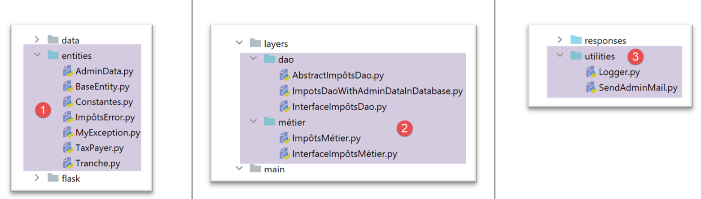
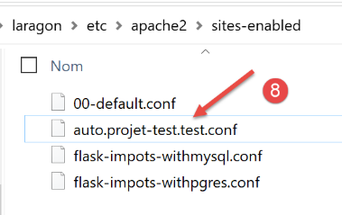
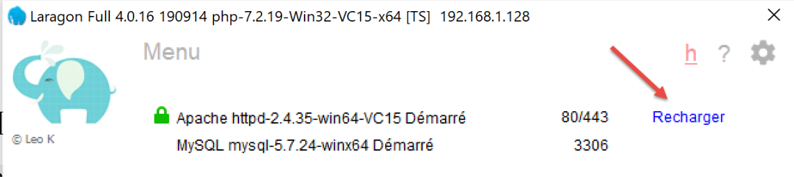
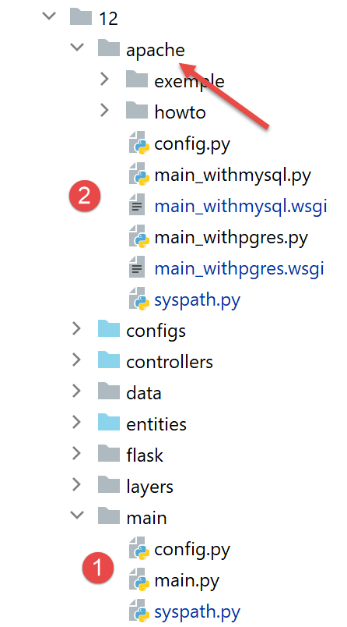

37. Ejercicio práctico: versión 17

Esta nueva versión trae las siguientes novedades:
- se va a portar a un servidor Apache / Windows;
- para llevar a cabo esta migración, la versión 17 contiene todas las dependencias que necesita en su carpeta [impots / http-servers/ 12]. Cabe recordar que las versiones anteriores obtenían sus dependencias de diferentes carpetas de todo el proyecto [python-flask-2020];
37.1. Reubicación de las dependencias de la aplicación

Cabe recordar que la gestión de las dependencias de la aplicación se realiza en el script [syspath]. En la versión anterior, este script era el siguiente:
def configure(config: dict) -> dict:
import os
# carpeta de este archivo
script_dir = os.path.dirname(os.path.abspath(__file__))
# ruta raíz
root_dir = "C:/Data/st-2020/dev/python/cours-2020/python3-flask-2020"
# dependencias
absolute_dependencies = [
# carpetas del proyecto
# BaseEntity, MyException
f"{root_dir}/classes/02/entities",
# InterfaceImpôtsDao, InterfaceImpôtsMétier, InterfaceImpôtsUi
f"{root_dir}/impots/v04/interfaces",
# AbstractImpôtsdao, ImpôtsConsole, ImpôtsMétier
f"{root_dir}/impots/v04/services",
# ImpotsDaoWithAdminDataInDatabase
f"{root_dir}/impots/v05/services",
# AdminData, ImpôtsError, TaxPayer
f"{root_dir}/impots/v04/entities",
# Constantes, tramos
f"{root_dir}/impots/v05/entities",
# Registrador, SendAdminMail
f"{root_dir}/impots/http-servers/02/utilities",
# carpeta del script principal
script_dir,
# configuraciones [database, layers, parameters, controllers, views]
f"{script_dir}/../configs",
# controladores
f"{script_dir}/../controllers",
# respuestas HTTP
f"{script_dir}/../responses",
# plantillas de vistas
f"{script_dir}/../models_for_views",
]
# se establece el syspath
from myutils import set_syspath
set_syspath(absolute_dependencies)
# se aplica la configuración
return {
"root_dir": root_dir,
"script_dir": script_dir
}
Es necesario reubicar todas las dependencias cuyo nombre absoluto dependa de la variable [root_dir] de la línea 8, es decir, las líneas 13 a 26.
El script [syspath] de la nueva versión será el siguiente:
def configure(config: dict) -> dict:
import os
# carpeta de este archivo
script_dir = os.path.dirname(os.path.abspath(__file__))
# dependencias
absolute_dependencies = [
# entidades de la aplicación
f"{script_dir}/../entities",
# capa [dao]
f"{script_dir}/../layers/dao",
# capa [métier]
f"{script_dir}/../layers/métier",
# utilidades
f"{script_dir}/../utilities",
# carpeta del script principal
script_dir,
# configuraciones [database, layers, parameters, controllers, views]
f"{script_dir}/../configs",
# controladores
f"{script_dir}/../controllers",
# respuestas HTTP
f"{script_dir}/../responses",
# plantillas de vistas
f"{script_dir}/../models_for_views",
]
# se establece el syspath
import sys
# se le agregan las dependencias absolutas del proyecto
for directory in absolute_dependencies:
# se verifica la existencia de la carpeta
existe = os.path.exists(directory) and os.path.isdir(directory)
if not existe:
# se avisa al desarrollador
raise BaseException(f"[set_syspath] le dossier du Python Path [{directory}] n'existe pas")
else:
# se inserta la carpeta al inicio de la ruta del sistema
sys.path.insert(0, directory)
# se aplica la configuración
return {
"script_dir": script_dir,
}
- líneas 8 a 27: todas las dependencias ahora son relativas a la variable [script_dir] de la línea 5;
- líneas 42-45: la variable [root_dir] ha desaparecido de la configuración de syspath;
- línea 10: las entidades de la aplicación se encuentran en la carpeta [entities] [1];
- línea 12: la capa [dao] se encuentra en la carpeta [layers/dao] [2];
- línea 14: la capa [métier] se encuentra en la carpeta [layers/métier] [2];
- línea 16: las utilidades [Logger, SendMail] se encuentran en la carpeta [utilities] [3];
- líneas 29-40: se calcula la ruta de Python de la aplicación sin importar el módulo [myutils];

37.2. Pruebas
En este punto, la versión 17 debería funcionar. Verifícalo.
37.3. Portación de una aplicación Python/Flask a un servidor Apache/Windows
37.3.1. Fuentes
Para portar una aplicación Flask a Apache / Windows, tuve que buscar información en Internet. Este es el enlace que me ayudó a empezar: [https://medium.com/@madumalt/flask-app-deployment-in-windows-apache-server-mod-wsgi-82e1cfeeb2ed];
Utilicé la información de este enlace, excepto para la configuración del servidor Apache. Para ello, utilicé un ejemplo de configuración del servidor Apache de Laragon.
37.3.2. Instalación del módulo de Python mod_wsgi
La aplicación de Python/Flask que desarrollamos utilizaba el servidor WSGI (Web Server Gateway Interface) [werkzeug] que viene incluido con Flask. Este servidor se describe |aquí|. El enlace [https://www.fullstackpython.com/wsgi-servers.html] describe el funcionamiento de los servidores WSGI. Existen diferentes |servidores WSGI|. Uno de ellos es el servidor Apache que opera en modo WSGI. Esta es la solución que adoptamos aquí porque Laragon, que hemos instalado, viene con un servidor Apache.
Para que el servidor Apache pueda alojar una aplicación en Python, debemos instalar el módulo de Python [mod_wsgi]. La instalación de este módulo es complicada porque durante el proceso se lleva a cabo una compilación en C++. Para que la instalación sea exitosa, se necesita un compilador de Microsoft C++. Una solución sencilla es instalar la versión actual de Visual Studio Community [https://visualstudio.microsoft.com/fr/vs/community/].
Si no se necesita Visual Studio para nada más que para [mod_wsgi], se puede limitar la instalación al entorno de C++:

Una vez instalado el compilador de C++, la instalación del módulo [mod_wsgi] se realiza en un terminal PyCharm:
(venv) C:\Data\st-2020\dev\python\cours-2020\python3-flask-2020\impots\http-servers\11>SET MOD_WSGI_APACHE_ROOTDIR=C:\MyPrograms\laragon\bin\apache\httpd-2.4.35-win64-VC15
(venv) C:\Data\st-2020\dev\python\cours-2020\python3-flask-2020\impots\http-servers\11>pip install mod_wsgi
Collecting mod_wsgi
Using cached mod_wsgi-4.7.1.tar.gz (498 kB)
Using legacy setup.py install for mod-wsgi, since package 'wheel' is not installed.
Installing collected packages: mod-wsgi
Running setup.py install for mod-wsgi ... done
Successfully installed mod-wsgi-4.7.1
- línea 1: se establece el valor de la variable de entorno [MOD_WSGI_APACHE_ROOTDIR]. Este valor es la ubicación del servidor Apache en el sistema de archivos. En este caso, dicha ubicación es [<laragon>\bin\apache\httpd-2.4.35-win64-VC15], donde <laragon> es la carpeta de instalación de Laragon. Puedes obtener esta ubicación de varias maneras. Aquí te mostramos una obtenida a partir de una de las opciones de Laragon:

En [1-3], el archivo [httpd.conf] es el archivo de configuración principal del servidor Apache. A continuación, se abre dicho archivo en un editor de texto (Notepad++, como se muestra a continuación):

En [2], la carpeta de instalación de Apache es la que precede a la cadena [conf\httpd.conf].
Volvamos a la instalación del módulo [mod_wsgi]:
- líneas 3-9: instalación del módulo [mod_wsgi];
37.3.3. Configuración del servidor Apache de Laragon
Vamos a configurar el servidor Apache de Laragon. Comenzamos con su archivo de configuración principal [httpd.conf]:
Nos colocamos al final del archivo [httpd.conf]:
…
IncludeOptional "C:/MyPrograms/laragon/etc/apache2/alias/*.conf"
IncludeOptional "C:/MyPrograms/laragon/etc/apache2/sites-enabled/*.conf"
Include "C:/MyPrograms/laragon/etc/apache2/httpd-ssl.conf"
Include "C:/MyPrograms/laragon/etc/apache2/mod_php.conf"
# Python mod_wsgi
LoadModule wsgi_module "c:/data/st-2020/dev/python/cours-2020/python3-flask-2020/venv/lib/site-packages/mod_wsgi/server/mod_wsgi.cp38-win_amd64.pyd"
- La línea 8 se ha agregado al final del archivo [httpd.conf]. Le indica al servidor Apache dónde se encuentra un elemento del módulo [mod_wsgi] que acabamos de instalar;
Una forma sencilla de obtener la ruta de la línea 8 es ejecutar el siguiente comando en un terminal PyCharm:
(venv) C:\Data\st-2020\dev\python\cours-2020\python3-flask-2020\impots\http-servers\11>mod_wsgi-express module-config
LoadModule wsgi_module "c:/data/st-2020/dev/python/cours-2020/python3-flask-2020/venv/lib/site-packages/mod_wsgi/server/mod_wsgi.cp38-win_amd64.pyd"
WSGIPythonHome "c:/data/st-2020/dev/python/cours-2020/python3-flask-2020/venv"
Algunas documentaciones indican que hay que agregar las líneas 2 y 3 al final del archivo [httpd.conf]. En mi caso, la línea 3 anterior provocaba un error (falta el módulo [encodings]). Por lo tanto, no se incluyó en el archivo [httpd.conf]. Solo se incluyó la línea 2. El significado de los diferentes parámetros del módulo [mod_wsgi] que se pueden utilizar en los archivos de configuración de Apache se describe |aquí|.
A continuación, activaremos el protocolo HTTPS del servidor Apache:

- en [1-4], se activa el protocolo HTTPS del servidor Apache;
A partir de ahora, podremos utilizar URL y [https://serveur/chemin];
Para configurar Apache para que aloje una aplicación Flask, el enlace mencionado |más arriba| utiliza servidores virtuales. Laragon también ofrece la posibilidad de administrar servidores virtuales:

- en [1-3], le pedimos a Laragon que cree automáticamente hosts virtuales;
El siguiente paso es crear un proyecto web con Laragon:
 |
 |  |
- En [1-3], se crea un proyecto PHP vacío;
- en [4-8], Laragon ha creado un sitio virtual llamado [auto.projet-test.test], configurado por el archivo [auto.projet-test.test.conf] [8] de la carpeta [sites-enabled] [7]. Esta carpeta se encuentra en la dirección [<laragon>\etc\apache2\sites-enabled], donde [laragon] es la carpeta de instalación de Laragon;
Aunque no forma parte de lo que estamos haciendo en este momento, tal vez te dé curiosidad echar un vistazo a este sitio web [projet-test] que acabamos de crear:

- En [1-5] se ha creado un proyecto vacío. Se trata de un proyecto PHP ubicado en la carpeta [<laragon>/www], donde [laragon] es la carpeta de instalación de Laragon;
Ahora revisemos el archivo [auto.projet-test.test.conf] generado por Laragon en la carpeta [<laragon>\etc\apache2\sites-enabled]:
define ROOT "C:/MyPrograms/laragon/www/projet-test/"
define SITE "projet-test.test"
<VirtualHost *:80>
DocumentRoot "${ROOT}"
ServerName ${SITE}
ServerAlias *.${SITE}
<Directory "${ROOT}">
AllowOverride All
Require all granted
</Directory>
</VirtualHost>
<VirtualHost *:443>
DocumentRoot "${ROOT}"
ServerName ${SITE}
ServerAlias *.${SITE}
<Directory "${ROOT}">
AllowOverride All
Require all granted
</Directory>
SSLEngine on
SSLCertificateFile C:/MyPrograms/laragon/etc/ssl/laragon.crt
SSLCertificateKeyFile C:/MyPrograms/laragon/etc/ssl/laragon.key
</VirtualHost>
- línea 1: la raíz, en el sistema de archivos, del proyecto creado;
- línea 2: el nombre del servidor virtual. Los archivos URL para este servidor tendrán el formato [http(s)://projet-test.test/chemin];
- líneas 4-12: configuración del sitio virtual para el puerto 80 (línea 4) y el protocolo HTTP;
- líneas 14-27: configuración del sitio virtual para el puerto 443 (línea 14) y el protocolo HTTPS;
Veamos cómo funciona un servidor virtual. Primero, iniciemos el servidor Apache y PHP:
Luego, con un navegador, solicitamos el URL [http://projet-test.test/]:

- en [1], la página URL solicitada;
- En [2], se utilizó el protocolo HTTP;
- en [3], dado que el proyecto [projet-test] está vacío, se obtiene el índice de su carpeta (lista de su contenido), índice vacío;
Ahora solicitemos el URL protegido por [https://projet-test.test/]:

- En [1-2], se obtiene la misma respuesta que antes, pero con el protocolo HTTPS [1];
La creación del servidor virtual [projet-test.test] generó una nueva entrada en el archivo [<windows>/system32/drivers/etc/hosts]:

- línea 23: la dirección IP del nombre [projet-test.test] es 127.0.0.1, es decir, la dirección de [localhost] (línea 20), la máquina local. Por lo tanto, cuando en un navegador se escribe URL [http://projet-test.test/chemin], la solicitud se envía a la dirección 127.0.0.1 en el puerto 80. Es entonces el servidor Apache de la máquina local (localhost) el que responde.
Cabe preguntarse por qué, al escribir la solicitud [http://projet-test.test/], el servidor Apache utiliza la configuración del archivo [<laragon>\etc\apache2\sites-enabled\auto.projet-test.test.conf]:

Para entenderlo, hay que ver qué envía el navegador al servidor Apache al realizar esta solicitud. Hagámosla con Postman:

- en [1-3], se envía una solicitud HTTPS [1];
- al enviar [4], Postman indica que no ha reconocido el certificado de seguridad. El protocolo HTTPS establece una conexión cifrada entre el cliente web (en este caso, Postman) y el servidor Apache. Esta conexión cifrada se realiza mediante certificados intercambiados entre el cliente y el servidor. Es el servidor el que inicia el diálogo para establecer la conexión cifrada enviando al cliente un certificado de seguridad. Para que el cliente acepte este certificado, debe estar firmado, es decir, adquirido a empresas autorizadas para emitir certificados de seguridad. Cuando activamos el protocolo HTTPS de Laragon, Laragon creó por sí mismo el certificado de seguridad. En este caso, se dice que el certificado es autofirmado. La mayoría de los clientes web emiten una advertencia cuando reciben un certificado autofirmado. Eso es lo que hace Postman en [4]. La mayoría de los clientes web ofrecen entonces la opción de desactivar la verificación del certificado de seguridad enviado por el servidor. Eso es lo que propone Postman en [5];
Hacemos clic en el enlace [5] para desactivar la verificación SSL (Secure Sockets Layer). SSL / TSL (Transport Layer Security) es un protocolo de seguridad que crea un canal de comunicación seguro entre dos equipos en Internet. Es el protocolo que utiliza aquí Apache. La respuesta es la siguiente:

Recibimos la misma página que con un navegador convencional. Ahora veamos el diálogo entre el cliente y el servidor en la consola de Postman (Ctrl-Alt-C):
- línea 6: el encabezado HTTP [Host] especifica el nombre del servidor al que se dirige el cliente web. Este es el principio de los servidores virtuales. En una misma dirección IP (en este caso, 127.0.0.1), un servidor web puede alojar varios sitios web con nombres diferentes. El encabezado HTTP [Host] le permite al cliente indicar a qué servidor (en este caso, el de la dirección 127.0.0.1) se dirige;
¿Y ahora qué hace Apache?
Al iniciarse, Apache lee todos los archivos de configuración que se encuentran en la carpeta [[<laragon>\etc\apache2\sites-enabled]:
Cada archivo de configuración define un servidor virtual. Por ejemplo, en el archivo [auto.projet-test.test.conf], encontramos la siguiente línea:
define ROOT "C:/MyPrograms/laragon/www/projet-test/"
define SITE "projet-test.test"
…
La línea 2 define el servidor virtual [projet-test.test]. El archivo [auto.projet-test.test.conf] contiene la configuración de este servidor virtual. Como lee al iniciarse todos los archivos de configuración de la carpeta [<laragon>\etc\apache2\sites-enabled], el servidor Apache sabe que existe un servidor virtual llamado [projet-test.test]. Así, cuando recibe del cliente Postman la solicitud HTTPS:
reconoce que la solicitud está dirigida al servidor virtual [projet-test.test] (línea 6) y que este existe. A continuación, utiliza la configuración del servidor virtual [projet-test.test] para responder al cliente Postman.
37.4. Creación de un primer servidor virtual de Apache
Ahora que sabemos para qué sirven los servidores virtuales y cómo configurarlos, vamos a crear uno. Servirá para ejecutar una aplicación Python Flask instalada en la carpeta [Apache] de la versión 17 que se está implementando en el servidor Apache:
Hemos colocado en la carpeta [http-servers/12/apache/exemple] la aplicación desarrollada en el párrafo |enlace|, un servicio web de fecha y hora:

El servidor [date_time_server.py] es el siguiente:
# importaciones
import os
import sys
import time
# tenemos que agregar la carpeta de los módulos a la ruta de Python
# para la adaptación a Apache en Windows
sys.path.insert(0, "C:/Data/st-2020/dev/python/cours-2020/python3-flask-2020/venv/lib/site-packages")
from flask import Flask, make_response, render_template
# aplicación Flask
script_dir = os.path.dirname(os.path.abspath(__file__))
application = Flask(__name__, template_folder=f"{script_dir}")
# Inicio URL
@application.route('/')
def index():
# envío de la hora al cliente
# time.localtime: número de milisegundos desde el 01/01/1970
# time.strftime permite dar formato a la hora y la fecha
# formato de visualización de fecha y hora
# d: día con 2 dígitos
# m: mes en dos dígitos
# y: año en dos dígitos
# H: hora 0,23
# M: minutos
# S: segundos
# fecha/hora actual
time_of_day = time.strftime('%d/%m/%y %H:%M:%S', time.localtime())
# se genera el documento para enviar al cliente
page = {"date_heure": time_of_day}
document = render_template("date_time_server.html", page=page)
print("document", type(document), document)
# respuesta HTTP al cliente
response = make_response(document)
print("response", type(response), response)
return response
# solo mano
if __name__ == '__main__':
application.config.update(ENV="development", DEBUG=True)
application.run()
La aplicación Flask se identifica con el identificador [application] (líneas 14, 43, 44). Este nombre es obligatorio. Si se hace referencia a la aplicación Flask con otro identificador, la aplicación no funcionará y mostrará un mensaje de error indicando que no encuentra el URL solicitado. Este mensaje de error no da ninguna indicación sobre el origen del error. Por lo tanto, hay que estar atento a este punto.
El archivo HTML al que se hace referencia en la línea 34 es el siguiente:
<!DOCTYPE html>
<html lang="fr">
<head>
<meta charset="UTF-8">
<title>Date et heure du moment</title>
</head>
<body>
<b>Date et heure du moment : {{page.date_heure}}</b>
</body>
</html>
- [date-time-server] será el servidor virtual que alojará esta aplicación. Se configurará mediante el archivo [<laragon>\etc\apache2\sites-enabled\date-time-server.conf] (recordemos que este nombre es libre: Apache lee todos los archivos presentes en [sites-enabled] para identificar los sitios virtuales alojados);
Para obtener este archivo, primero copiamos el archivo [auto.projet-test.test.conf] y luego lo modificamos.

El archivo [date-time-server.conf] quedará así:
# carpeta del script Python-Flask de la aplicación
define ROOT "C:/Data/st-2020/dev/python/cours-2020/python3-flask-2020/impots/http-servers/12/apache/exemple"
# nombre del sitio web configurado por este archivo
# aquí se llamará date-time-server
# los URL serán del tipo http(s)://date-time-server/ruta
define SITE "date-time-server"
# agregue la dirección IP 127.0.0.1 para el sitio SITE en c:/windows/system32/drivers/etc/hosts
# URL HTTP
<VirtualHost *:80>
# con el alias / los URL tendrán el formato http(s)://servidor-de-fecha-y-hora/ruta/...
WSGIScriptAlias / "${ROOT}/date_time_server.py"
DocumentRoot "${ROOT}"
ServerName ${SITE}
ServerAlias *.${SITE}
<Directory "${ROOT}">
AllowOverride All
Require all granted
</Directory>
</VirtualHost>
# URL protegidas con HTTPS
<VirtualHost *:443>
# con el alias / los URL tendrán el formato http(s)://servidor-de-fecha-y-hora/ruta/...
WSGIScriptAlias / "${ROOT}/date_time_server.py"
DocumentRoot "${ROOT}"
ServerName ${SITE}
ServerAlias *.${SITE}
<Directory "${ROOT}">
AllowOverride All
Require all granted
</Directory>
SSLEngine on
SSLCertificateFile C:/MyPrograms/laragon/etc/ssl/laragon.crt
SSLCertificateKeyFile C:/myprograms/laragon/etc/ssl/laragon.key
</VirtualHost>
- línea 7: se le asigna un nombre al servidor virtual configurado por el archivo;
- línea 2: se asigna el valor de la variable [ROOT] utilizada en las líneas 14 y 27;
- líneas 14 y 27: se indica la ruta del script de Python que debe ejecutarse cuando el servidor virtual recibe una solicitud. Aquí se indica que las solicitudes para el servidor [date-time-server] son procesadas por el script de Python [date_time_server.py]. Esta diferencia con el archivo [auto.projet-test.test.conf] se debe a que ese archivo configuraba un servidor PHP, mientras que el archivo [date-time-server.conf] configura un servidor Python;
- líneas 14 y 27: el atributo [WSGIScriptAlias /] indica aquí que la raíz del servidor [date-time-server] será [/]. De este modo, los URL de la aplicación tendrán la forma [http(s)://date-time-server/chemin];
- en las líneas 14 y 27, se le puede asignar otra raíz a la aplicación, por ejemplo, [WSGIScriptAlias /show]. Entonces, los URL de la aplicación tendrán la forma [http(s)://show/date-time-server/chemin];
También debemos agregar una línea al archivo [<windows>/system32/drivers/etc/hosts]:
Agregamos la línea 25 para asignar la dirección IP [127.0.0.1] al servidor virtual [date-time-server].
Verifiquemos todo esto. Iniciamos el servidor Apache:

Luego solicitamos URL [https://date-time-server] con un navegador:

- en [1], la página solicitada URL;
- en [3], la respuesta del servidor;
- en [2], el navegador indica que la conexión HTTPS no es segura porque ha detectado que el certificado enviado por el servidor Apache era autofirmado;
Ahora, en el archivo [date-time-server.conf], agreguemos un alias en las líneas 14 y 27:
WSGIScriptAlias /show-date-time "${ROOT}/date_time_server.py"
El servidor Apache no toma en cuenta el cambio de inmediato. Es necesario recargarlo:

A continuación, solicitamos el URL [https://date-time-server/show-date-time]. La respuesta del servidor es entonces la siguiente:

37.5. Portación de la aplicación de cálculo de impuestos a Apache / Windows
El archivo [apache] [2] se obtiene inicialmente al copiar el archivo [main]. Es importante que estén en el mismo nivel para que las rutas del script [syspath.py], copiado de [1] a [2], sigan siendo válidas. Para no interferir con la aplicación [impots / http-servers/ 12] que está funcionando, colocamos en [apache] la configuración que ejecutará el servidor Apache;

- el archivo [config] de [2] es igual que [config] de [1];
- el archivo [syspath] de [2] es el mismo que [syspath] de [1];
- el archivo [main_withmysql] de [2] es el archivo [main] de [1] con las siguientes modificaciones:
El script principal [main] recibía un parámetro [mysql / pgres] que le indicaba qué SGBD debía utilizar. El script [main_withmysql] utiliza el SGBD MySQL:
# se espera un parámetro de MySQL o PostgreSQL
import os
import sys
# se configura la aplicación con MySQL
import config
config = config.configure({'sgbd': "mysql"})
# dependencias
from SendAdminMail import SendAdminMail
from Logger import Logger
from ImpôtsError import ImpôtsError
…
En la línea 7, se establece el SGBD como MySQL.
- El archivo [main_withpgres] de [2] es el archivo [main] de [1] con las siguientes modificaciones: utiliza el SGBD PostgreSQL:
# se espera un parámetro de MySQL o PostgreSQL
import os
import sys
# se configura la aplicación con MySQL
import config
config = config.configure({'sgbd': "pgres"})
# dependencias
from SendAdminMail import SendAdminMail
from Logger import Logger
from ImpôtsError import ImpôtsError
…
En la línea 7, se cambia SGBD por PostgreSQL.
Una vez hecho esto, se crea el script [main_withmysql.wsgi] (el sufijo utilizado no importa) de la siguiente manera:
El script [main_withmysql.wsgi] será el destino que ejecutará el servidor Apache en modo WSGI:
- el objetivo del servidor Apache podría haber sido el script [main_withmysql.py], tal como se hizo anteriormente con el script [date_time_server.py]. Pero habría sido necesario modificarlo un poco:
- a diferencia del modo de ejecución con un script de consola, con Apache, la carpeta que contiene el objetivo [main_withmysql.py] no forma parte de la ruta de Python. Por lo tanto, la línea 6 del script [main_withmysql.py] genera un error;
- la segunda modificación que habría que haber realizado es que, en [main_withmysql], la aplicación Flask se referencia mediante el identificador [app]. Sabemos que, para Apache / WSGI, también debe referenciarse mediante un identificador [application];
- en lugar de modificar [main_withmysql.py], cambiamos el destino de Apache. A partir de ahora será el script [main_withmysql.wsgi] mencionado anteriormente:
- líneas 1-7: se agrega la carpeta del script a la ruta de Python. De este modo, la línea 6 de [main_withmysql.py] ya no genera un error;
- líneas 9-10: la importación de [main_withmysql.py] provoca su ejecución. Además, se hace referencia a la aplicación Flask [app], que se encuentra en [main_withmysql.py], con el identificador [application] que necesita Apache en modo WSGI;
Se hace lo mismo con el script [main_withpgres.wsgi]:
# carpeta de este archivo
import os
script_dir = os.path.dirname(os.path.abspath(__file__))
# se agrega al syspath para que la importación siguiente sea posible
import sys
sys.path.insert(0, script_dir)
# importamos la aplicación Flask [app] y le asignamos el nombre [application]
from main_withpgres import app as application
Ya contamos con los objetivos ejecutables para el servidor Apache. Ahora debemos crear dos servidores virtuales, uno para cada objetivo.
En [<laragon>\etc\apache2\sites-enabled], creamos el archivo [flask-impots-withmysql.conf] (el nombre que le demos no importa):

# carpeta del script .wsgi
define ROOT "C:/Data/st-2020/dev/python/cours-2020/python3-flask-2020/impots/http-servers/12/apache"
# nombre del sitio web configurado por este archivo
# aquí se llamará flask-impots-withmysql
# los URL serán del tipo http(s)://flask-impots-withmysql/ruta
define SITE "flask-impots-withmysql"
# Agrega la dirección IP 127.0.0.1 para el sitio SITE en c:/windows/system32/drivers/etc/hosts
# ingresa aquí las rutas de las bibliotecas de Python que se van a utilizar; sepáralas con comas
# aquí las bibliotecas de un entorno virtual de Python
WSGIPythonPath "C:/Data/st-2020/dev/python/cours-2020/python3-flask-2020/venv/lib/site-packages"
# Directorio principal de Python: solo es necesario si hay varias versiones de Python instaladas
# WSGIPythonHome "C:/Archivos de programa/Python38"
# URL HTTP
<VirtualHost *:80>
# con el alias /, los URL tendrán el formato /{prefixe_url}/action/...
# con el alias /impuestos, los URL tendrán el formato /impuestos/{prefixe_url}/acción/...
# donde [prefixe_url] se define en parameters.py
WSGIScriptAlias / "${ROOT}/main_withmysql.wsgi"
DocumentRoot "${ROOT}"
ServerName ${SITE}
ServerAlias *.${SITE}
<Directory "${ROOT}">
AllowOverride All
Require all granted
</Directory>
</VirtualHost>
# URL protegidas con HTTPS
<VirtualHost *:443>
# con el alias /, los URL tendrán el formato /{prefixe_url}/action/...
# con el alias /impuestos, los URL tendrán el formato /impuestos/{prefixe_url}/action/...
# donde [prefixe_url] se define en parameters.py
WSGIScriptAlias / "${ROOT}/main_withmysql.wsgi"
DocumentRoot "${ROOT}"
ServerName ${SITE}
ServerAlias *.${SITE}
<Directory "${ROOT}">
AllowOverride All
Require all granted
</Directory>
SSLEngine on
SSLCertificateFile C:/MyPrograms/laragon/etc/ssl/laragon.crt
SSLCertificateKeyFile C:/myprograms/laragon/etc/ssl/laragon.key
</VirtualHost>
- línea 2: la raíz de la aplicación, la carpeta [apache] que hemos creado;
- líneas 23 y 38: el destino [main_witmysql.wsgi] que hemos creado;
- línea 7: el servidor virtual se llamará [flask-impots-withmysql];
- línea 13: la directiva [WSGIPythonPath] permite agregar carpetas a la ruta de Python. Aquí, Apache no sabe que hemos utilizado un entorno virtual para desarrollar la aplicación y que todos los módulos utilizados por la aplicación se encuentran en ese entorno virtual. Por lo tanto, en la línea 13, agregamos la carpeta que contiene todos los módulos del entorno virtual utilizado. Una opción es copiar esta carpeta a otra ubicación del sistema de archivos y hacer referencia a esa ubicación. Otra opción es agregar esta carpeta a la ruta de Python directamente en el objetivo [main_witmysql.wsgi] (probablemente sea la mejor solución);
- línea 16: se le puede indicar a Apache la carpeta de instalación de Python en el sistema de archivos. Normalmente, esta se encuentra en el PATH de la máquina y, a menudo, esta línea es innecesaria (ese era el caso aquí). Sin embargo, puede haber varias instalaciones de Python en la máquina y es posible que la deseada no se encuentre en el PATH de la máquina. En ese caso, esta línea resuelve el problema;
De la misma manera, creamos un archivo [flask-impots-withpgres.conf]:
# carpeta del script .wsgi
define ROOT "C:/Data/st-2020/dev/python/cours-2020/python3-flask-2020/impots/http-servers/12/apache"
# nombre del sitio web configurado por este archivo
# aquí se llamará flask-impots-withmysql
# los URL serán del tipo http(s)://flask-impots-withmysql/ruta
define SITE "flask-impots-withpgres"
#: agrega la dirección IP 127.0.0.1 para el sitio SITE en c:/windows/system32/drivers/etc/hosts
# ingresa aquí las rutas de las bibliotecas de Python que se van a utilizar; sepáralas con comas
# aquí las bibliotecas de un entorno virtual de Python
WSGIPythonPath "C:/Data/st-2020/dev/python/cours-2020/python3-flask-2020/venv/lib/site-packages"
# Directorio principal de Python: solo es necesario si hay varias versiones de Python instaladas
# WSGIPythonHome "C:/Archivos de programa/Python38"
# URL HTTP
<VirtualHost *:80>
# con el alias /, los URL tendrán el formato /{prefixe_url}/action/...
# con el alias /impuestos, los URL tendrán el formato /impuestos/{prefixe_url}/acción/...
# donde [prefixe_url] se define en parameters.py
WSGIScriptAlias / "${ROOT}/main_withpgres.wsgi"
DocumentRoot "${ROOT}"
ServerName ${SITE}
ServerAlias *.${SITE}
<Directory "${ROOT}">
AllowOverride All
Require all granted
</Directory>
</VirtualHost>
# URL protegidas con HTTPS
<VirtualHost *:443>
# con el alias /, los URL tendrán el formato /{prefixe_url}/action/...
# con el alias /impuestos, los URL tendrán el formato /impuestos/{prefixe_url}/action/...
#, donde [prefixe_url] se define en parameters.py
WSGIScriptAlias / "${ROOT}/main_withpgres.wsgi"
DocumentRoot "${ROOT}"
ServerName ${SITE}
ServerAlias *.${SITE}
<Directory "${ROOT}">
AllowOverride All
Require all granted
</Directory>
SSLEngine on
SSLCertificateFile C:/MyPrograms/laragon/etc/ssl/laragon.crt
SSLCertificateKeyFile C:/myprograms/laragon/etc/ssl/laragon.key
</VirtualHost>
Guardamos todos estos archivos, iniciamos el servidor Apache y los archivos SGBD, MySQL y PostgreSQL. La aplicación está configurada con el prefijo de URL, [/do] y [with_csrftoken=False] (no hay token CSRF) en [configs/parameters.py]. Solicitamos el URL y el [https://flask-impots-withmysql/do]. La respuesta del servidor es la siguiente:

Ahora solicitamos el URL y el [https://flask-impots-pgres/do]. La respuesta es la siguiente:

Ambas aplicaciones funcionan con normalidad.
Ahora cambiemos el parámetro [WSGIScriptAlias] por [flask-impots-withmysql.conf]:
# carpeta del script .wsgi
define ROOT "C:/Data/st-2020/dev/python/cours-2020/python3-flask-2020/impots/http-servers/12/apache"
…
# URL HTTP
<VirtualHost *:80>
# con el alias /, los URL tendrán el formato /{prefixe_url}/action/...
# con el alias /impuestos, los URL tendrán el formato /impuestos/{prefixe_url}/acción/...
# donde [prefixe_url] se define en parameters.py
WSGIScriptAlias /impots "${ROOT}/main_withmysql.wsgi"
…
</VirtualHost>
# URL protegidas con HTTPS
<VirtualHost *:443>
# con el alias / los URL tendrán el formato /{prefixe_url}/action/...
# con el alias /impuestos, los URL tendrán el formato /impuestos/{prefixe_url}/acción/...
#, donde [prefixe_url] se define en parameters.py
WSGIScriptAlias /impots "${ROOT}/main_withmysql.wsgi"
…
</VirtualHost>
- líneas 11 y 20, el alias WSI ahora es [/impots];
Detendremos y reiniciaremos el servidor Apache, y luego solicitaremos el URL [https://flask-impots-withmysql/impots/do]. La respuesta del servidor es la siguiente:

Se ha producido un error. El URL [1] nos indica la causa. Debería haber sido [https://flask-impots-withmysql/impots/do/afficher-vue-authentification]. Falta el alias WSGI. Es un error de nuestra aplicación. Esta sí sabe manejar un prefijo de URL (/do sí está presente). Se podría pensar que al agregar el prefijo [/impots/do] a nuestra aplicación se resolvería el problema anterior. Pero no es así. Entonces surgen otros tipos de problemas. El alias WSGI no se comporta como un prefijo de URL.
Intentemos entender qué pasó. Solicitamos el URL a partir de [https://flask-impots-withmysql/impots/do]. Esperábamos que apareciera la pantalla de autenticación. En [1], arriba, vemos que la aplicación solicitó su visualización, pero no con el URL correcto. Analicemos el recorrido de la solicitud [https://flask-impots-withmysql/impots/do].
En primer lugar, se ejecutó la siguiente ruta (configs/routes.py):
# las rutas de la aplicación Flask
# raíz de la aplicación
app.add_url_rule(f'{prefix_url}/', methods=['GET'],
view_func=routes.index)
La ruta de la línea 3 es, en nuestro ejemplo, [https://flask-impots-withmysql/impots/do]. Se observa que a la ruta se le ha eliminado la parte [https://flask-impots-withmysql/impots], quedando simplemente como [/do]. En cuanto a la parte [https://flask-impots-withmysql], es normal, ya que el nombre del servidor no se incluye en la ruta. Pero se observa que tampoco incluye el alias WSGI [/impots]. Este es un punto importante. Incluso con un alias WSGI, nuestras rutas iniciales siguen siendo válidas.
Ahora veamos qué hace la función [index] de la línea 4 (configs/routes_without_csrftoken):
# raíz de la aplicación
def index() -> tuple:
# redirección a /init-session/html
return redirect(url_for("init_session", type_response="html"), status.HTTP_302_FOUND)
En la línea 4, se nos redirige a la función URL desde la función [init_session]. En [configs/routes.py], esta función se ha asociado a la ruta [/do/init-session/html]:
# init-session
app.add_url_rule(f'{prefix_url}/init-session/<string:type_response>{csrftoken_param}', methods=['GET'],
view_func=routes.init_session)
En la línea 2, en nuestra prueba [csrftoken_param], la cadena está vacía. La aplicación no maneja aquí el token CSRF.
La función [init_session] se define de la siguiente manera (configs/routes_without_csrftoken):
# init-session
def init_session(type_response: str) -> tuple:
# se ejecuta el controlador asociado a la acción
return front_controller()
En la línea 4, comienza la cadena de procesamiento de la acción [init-session]. Esta cadena termina de la siguiente manera en [responses/HtmlResponse]:
…
# ahora hay que generar el URL de redirección sin olvidar el token CSRF si se solicita
if config['parameters']['with_csrftoken']:
csrf_token = f"/{generate_csrf()}"
else:
csrf_token = ""
# respuesta de redirección
return redirect(f"{config['parameters']['prefix_url']}{ads['to']}{csrf_token}"), status.HTTP_302_FOUND
La acción [init-session] es una acción ADS (Acción «Do Something») que termina con una redirección a una vista, en la línea 9. Ahí es donde radica el problema. La función [redirect] de la línea 9 no agrega automáticamente el alias WSGI a la redirección URL. Esto es lo que nos muestra la captura de pantalla anterior. Falta el alias /impuestos en el objeto de redirección URL.
La siguiente versión resuelve el problema del alias WSGI.